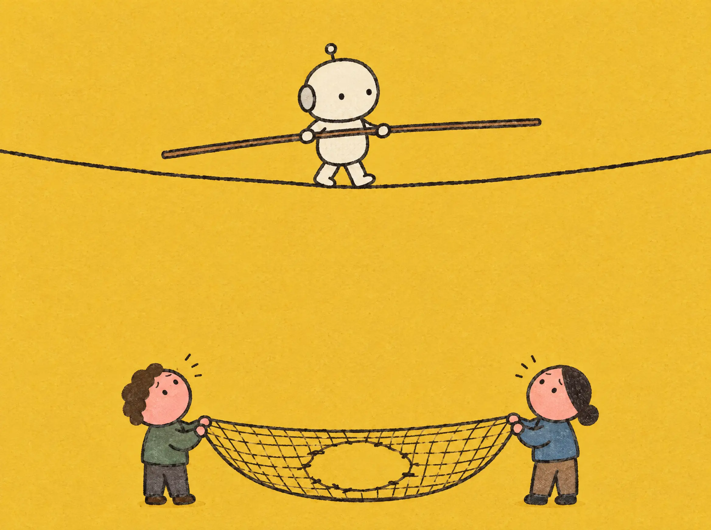

2026.10.07 수
오늘 아침AI 소식 세 가지
AI가 메모리 칩을 가져가면서 값싼 스마트폰이 줄고, 큰 AI 회사들은 100% 안전은 약속할 수 없다고 답했어요. AI 그림에 진짜 작가 서명이 들어간 일도 있었어요.
오늘 소식 읽기오늘의 소식
어려운 AI 소식을 아침 먹기 전 5분 안에, 초등학생도 할머니도 그림 한 장으로 알 수 있게.
AILAB 편집실
오늘의 말
지난 소식
오늘이 첫 소식이에요. 내일부터 지난 소식이 여기에 쌓여요.